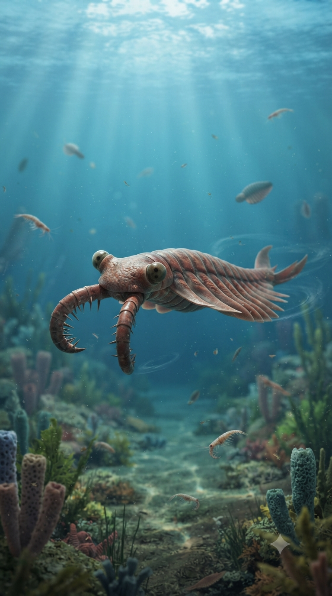
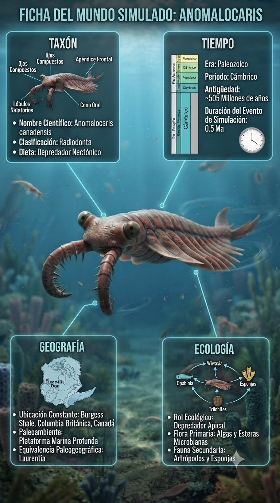
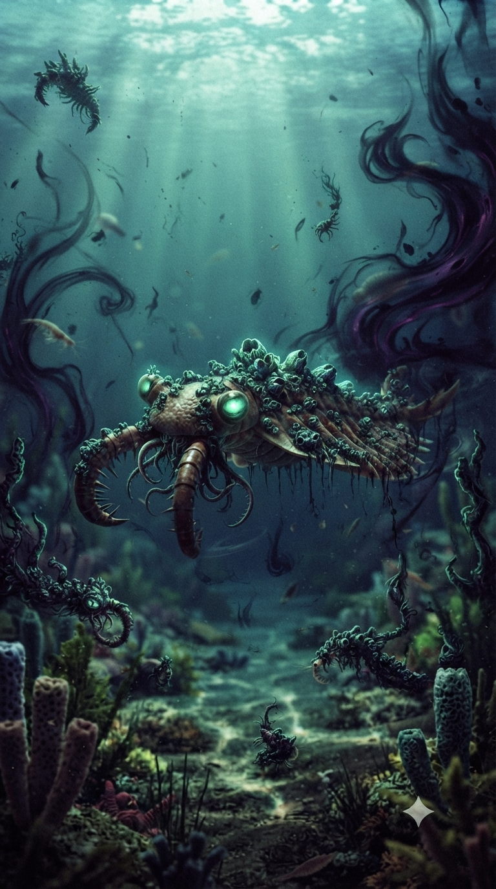
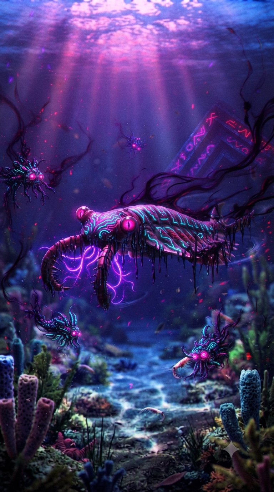

Paleoficha de Anomalocaris




Periodo: Cámbrico Medio
Edad: Hace aproximadamente 505 millones de años.
Dieta: Carnívoro especializado.
Distribución: Formación Burgess Shale, Columbia Británica (Canadá).
TAXÓN:
Anomalocaris canadensis (Radiodonta, Stem-Arthropoda). El mayor depredador conocido de los mares cámbricos, dotado de grandes apéndices prensiles y una boca circular formada por placas dentadas.
TIEMPO:
Cámbrico Medio (Burgess Shale), hace aproximadamente 505 millones de años.
GEOGRAFÍA:
Formación Burgess Shale, Columbia Británica (Canadá). Talud continental situado frente al margen de Laurentia.
ECOLOGÍA:
Habitó ecosistemas marinos profundos de gran diversidad biológica. Compartía el entorno con Marrella, Hallucigenia, trilobites y numerosos invertebrados de cuerpo blando. Actuaba como depredador de cúspide, utilizando sus apéndices frontales para capturar presas y ejercer una fuerte presión evolutiva sobre las comunidades marinas de la Explosión Cámbrica.
CLIMA:
Wm10 (Marino costero). Condiciones oceánicas cálidas, estables y bien oxigenadas.
ESTADO ECOLÓGICO:
Dinámico. Considerado el primer gran superdepredador conocido del registro fósil y uno de los principales protagonistas de la carrera armamentista evolutiva del Cámbrico.
Vídeo PalEntropía:
▶ Ver Short en YouTube